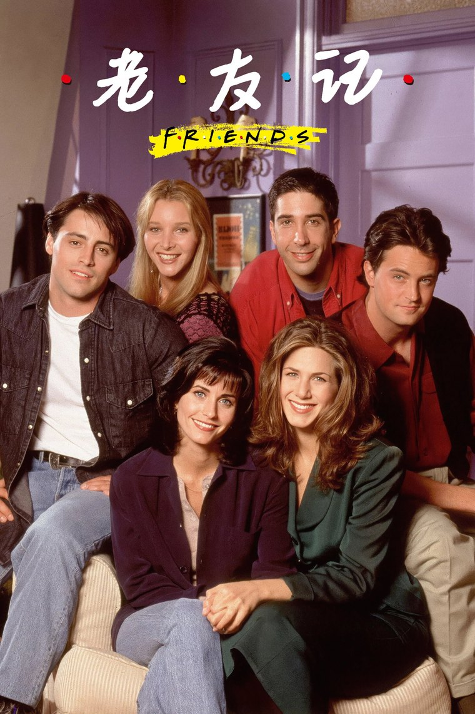
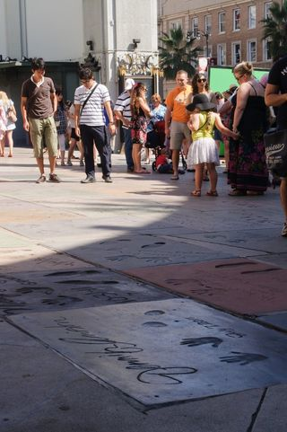
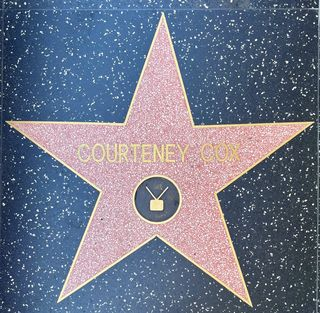
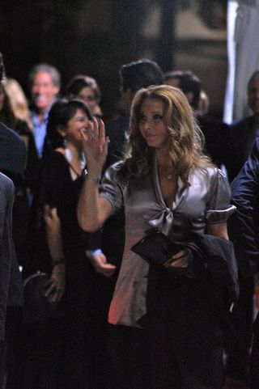
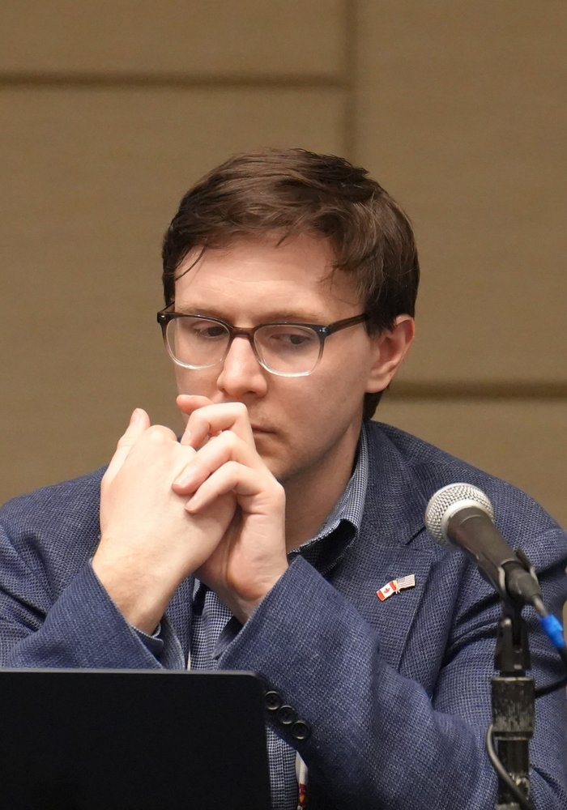
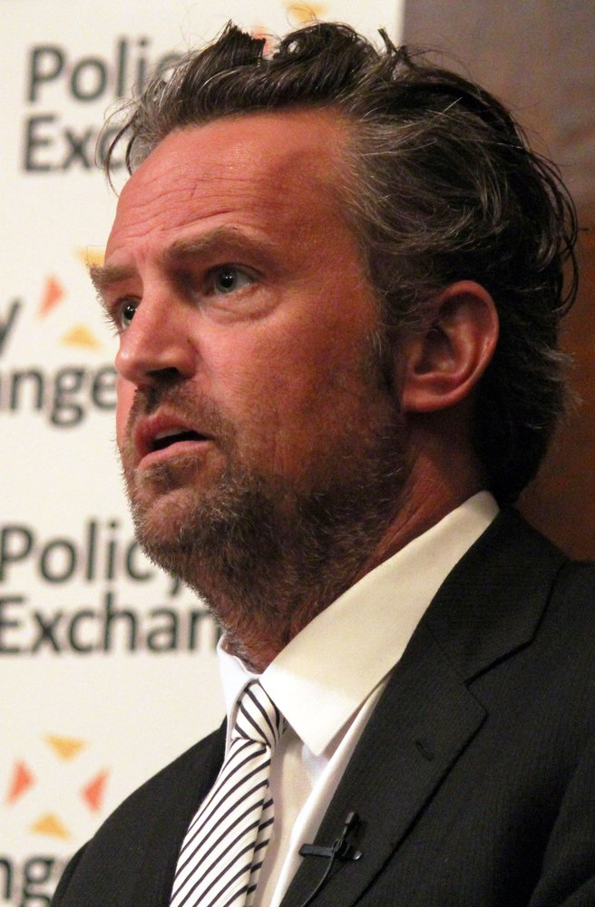
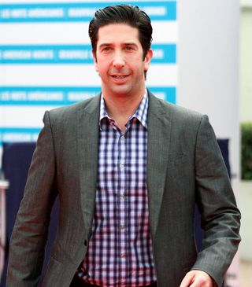

TV SERIES / 影视剧集
Friends
老友记 · 六个人，十年的纽约
六位二十多岁的纽约客，在 Manhattan 的公寓与 Central Perk 咖啡馆之间，把合租屋里的鸡毛蒜皮过成了全球一代人的青春注脚。没有大起大落，只有友情、爱情，和那句永远的「I'll be there for you」。

TV SERIES / 影视剧集
老友记 · 六个人，十年的纽约
六位二十多岁的纽约客，在 Manhattan 的公寓与 Central Perk 咖啡馆之间，把合租屋里的鸡毛蒜皮过成了全球一代人的青春注脚。没有大起大落，只有友情、爱情，和那句永远的「I'll be there for you」。
故事围绕六位住在纽约 Manhattan 的好友展开：洁癖又靠谱的 Monica、逃婚投奔她的闺蜜 Rachel、敏感的书呆子 Ross（Monica 的哥哥）、古怪却温暖的 Phoebe、天真的演员 Joey，以及毒舌却最重情的 Chandler。他们共享同一片客厅、同一张咖啡馆沙发，在二十多岁到三十多岁的十年里彼此见证恋爱、失业、结婚、生子与离别。
全剧没有传统意义上的主角，六条线始终等重——这正是它最颠覆也最迷人的地方。它把都市单身青年的孤独与相互依存拍得既好笑又戳心，让「six of one」的合租屋成为一代人关于「家」的想象。
I'll be there for you — when the rain starts to pour.
— 主题曲《I'll Be There for You》· The Rembrandts，唱尽了 90 年代关于陪伴与友谊的全部温柔。
六位主演均从第一季陪跑到第十季，以下为真实演员对应照片与角色简介。

Jennifer Aniston
逃婚出走的豪门千金，从 Central Perk 服务生一路成长为时尚圈人，Ross 十年分合的对象。

Courteney Cox
群组的「大家长」，洁癖、好强、厨艺惊人，最终与 Chandler 成家领养双胎。

Lisa Kudrow
eccentricity 满分的按摩师兼街头歌手，身世坎坷却最通透，主题曲作者的化身。

Matt LeBlanc
天真讲义气的演员，招牌台词「How you doin'?」，永远为朋友两肋插刀。

Matthew Perry
用冷嘲热讽掩盖不安的职场人，毒舌却最重情，最终与 Monica 修成正果。

David Schwimmer
古生物学家、三婚三离的「书呆子」，Rachel 的女儿 Emma 的父亲，全组的智囊。
| 季 | 首播年 | 集数 | 一句话主题 |
|---|---|---|---|
| 第 1 季 | 1994 | 24 | 六人合租起步，Ross 与 Rachel 暧昧萌芽 |
| 第 2 季 | 1995 | 25 | Ross–Rachel 正式恋爱，群像日常成型 |
| 第 3 季 | 1996 | 25 | 关系波折，「We were on a break!」名场面 |
| 第 4 季 | 1997 | 24 | Ross 伦敦婚礼，Chandler 与 Monica 暗生情愫 |
| 第 5 季 | 1998 | 24 | Ross 再离婚，Vegas 混乱结婚又作废 |
| 第 6 季 | 1999 | 25 | Chandler 求婚，群组进入婚育阶段 |
| 第 7 季 | 2000 | 24 | Monica 与 Chandler 完婚 |
| 第 8 季 | 2001 | 24 | Rachel 怀孕，女儿 Emma 降生 |
| 第 9 季 | 2002 | 24 | Joey 与 Rachel 的短暂感情线 |
| 第 10 季 | 2003 | 18 | 十年落幕，众人留下钥匙告别公寓 |
Crane 与 Kauffman 向 NBC 提出构想，原名《Insomnia Café》。
试播集播出，NBC 当即订下整季，开启十年长跑。
每年稳定推出一季，长期稳居收视前十。
第 54 届艾美奖斩获喜剧类最佳剧集等六项大奖。
系列大结局播出，吸引约 5250 万美国观众，位列电视史第五。
重聚特辑《Friends: The Reunion》登陆 HBO Max，引爆全球怀旧。